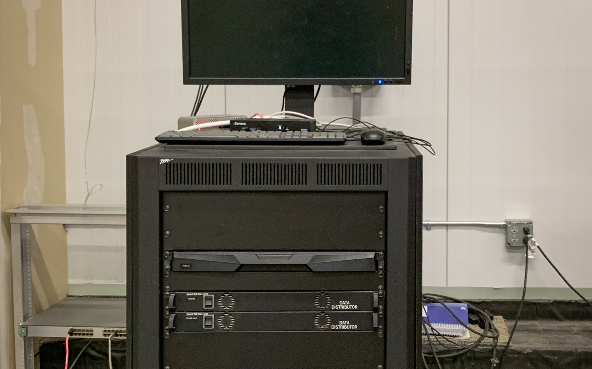

どこまでAIで、 どこから人か。
Vulnerability Assessment
脆弱性診断のどの工程をエージェントが担い、どこから人が引き取るのか。5つのステップとして開示します。診断に使う環境は、すべて自社設備の中で閉じています。
The Boundary
どの工程をエージェントが担い、どこから人が引き取るのか。
「AIを活用しています」も「熟練の技術者が対応します」も、どちらも間違いではありません。ただ、その境界がどこにあるかは書かれていない。ここでは5つの工程に分けて、担当を明示します。
診断計画の作成
対象の構造を読み、どこを、どの順で、どこまで見るかを決めます。
計画に基づく診断
既知のパターンに対する網羅的な検査は、エージェントが実行します。
診断結果の再現確認
エージェントが挙げた結果を、人が実際に再現して確かめます。再現しなかったものは誤検知として落とします。この工程を省くと、報告書の件数は増えますが、対応すべきものは見えなくなります。
人でなければ見つからない領域の診断
設計の前提そのものに起因する穴は、パターンの照合では出てきません。攻撃者が突くのは「仕組み」ではなく「システムの思想」です。
レポート作成
エージェントが下書きを作り、人が内容を確認して出します。
Closed By Design
診断で扱うのは、まだ塞がっていない穴の情報です。
脆弱性の情報は、修正が終わるまでのあいだ、そのまま攻撃に使える情報でもあります。その扱い方は、診断そのものの品質と同じくらい重要だと考えています。
外部のクラウドLLMに送る構成
解析や要約のために外部のモデルを使うと、その時点で情報は自社の管理外に出ます。どこに保持され、いつ消えるのかを、発注した側から確かめる手段はありません。
自社設備の中で閉じる構成
推論に使う計算資源を自社で保有し、診断の全工程を内部で完結させています。外部のAIサービスへ向かう経路そのものが存在しません。
※ 他社の一般構成と自社構成を左右に並べた経路図をここに入れる予定です（宮田さんに両方の経路を確認中）。

Who Takes Over
第3・第4の工程を引き取るのは、この2名です。
案件ごとに担当が変わることはありません。エージェントで削った工数を、そのまま人でしか判断できない領域に振り向けるための体制です。
CTO経験者
システムを設計する側にいた視点から、その構成が何を前提に置いているかを読みます。第4工程で見る「設計の思想」は、ここから出てきます。
国際ホワイトハッカー
攻撃側の手順で、実際に再現できるかを確かめます。第3工程の誤検知の切り分けと、第4工程の実地の検証を担います。
Estimate
ヒアリングシートの記入は、お願いしていません。
設計の前提まで見るには、実際に触るしかありません。だから見積もりの段階でコピー環境を触ります。結果として、発注側が仕様を書き出す作業が要らなくなります。
実際に触るしかない だから見積もり段階で
コピー環境を触る 結果として
ヒアリングシートが要らない